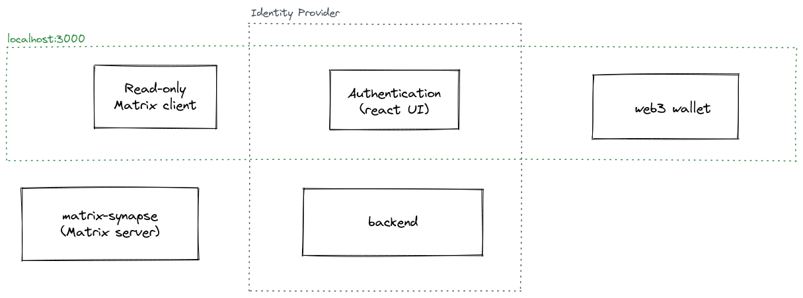
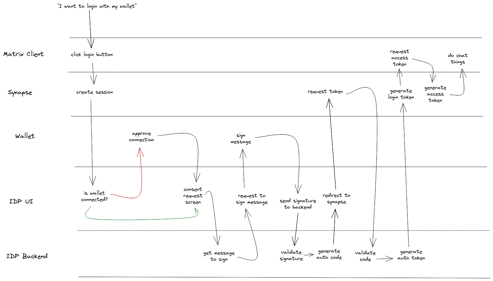
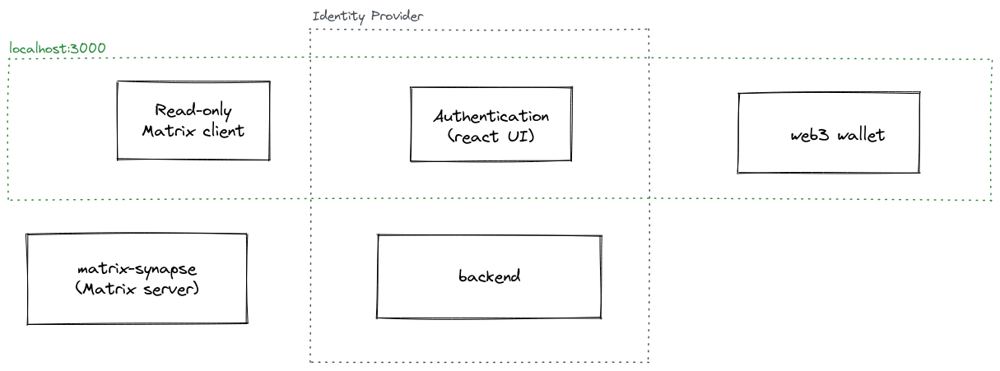
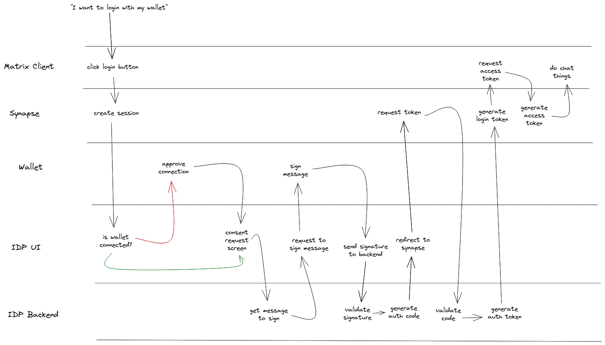

Build Something Awesome Using Ethereum For Authentication
Built a read-only Matrix chat client that used an OIDC flow to login. The IDP was custom built to use an Ethereum wallet as the authentication step.
The architecture

The flow

Built a read-only Matrix chat client that used an OIDC flow to login. The IDP was custom built to use an Ethereum wallet as the authentication step.

